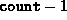

Data Structures and Algorithms
with Object-Oriented Design Patterns in Java
Data Structures and Algorithms
with Object-Oriented Design Patterns in Java
Program  defines the
push, pop, and getTop,
methods of the StackAsArray class.
The first of these, push,
adds an element to the stack.
It takes as its argument the Object
to be pushed onto the stack.
defines the
push, pop, and getTop,
methods of the StackAsArray class.
The first of these, push,
adds an element to the stack.
It takes as its argument the Object
to be pushed onto the stack.
Program: StackAsArray class push, pop, and getTop methods.
The push method first checks to see if there is room left in the stack. If no room is left, it throws a ContainerFullException exception. Otherwise, it simply puts the object into the array, and then increases the count variable by one. In a correctly functioning program, stack overflow should not occur. If we assume that overflow does not occur, the running time of the push method is clearly O(1).
The pop method removes an item from the stack and returns that item. The pop method first checks if the stack is empty. If the stack is empty, it throws a ContainerEmptyException exception. Otherwise, it simply decreases count by one and returns the item found at the top of the stack. In a correctly functioning program, stack underflow will not occur normally. The running time of the pop method is O(1).
Finally, the getTop method is a stack accessor which returns the top item in the stack. The getTop method does not modify the stack. In particular, it does not remove the top item from the stack. The getTop method first checks if the stack is empty. If the stack is empty, it throws a ContainerEmptyException exception. Otherwise, it returns the top item, which is found at position  in the array. Assuming stack underflow does not occur normally, the running time of the getTop method is O(1).
 Copyright © 1998 by Bruno R. Preiss, P.Eng. All rights reserved.
Copyright © 1998 by Bruno R. Preiss, P.Eng. All rights reserved.